Carleton University - OSS4900 Capstone Project
Multimodal Wildfire Detection Using RGB-Thermal Sensor Fusion
This project compares RGB-only, thermal-only, OR late fusion, Product-of-Experts, and intermediate feature fusion models for wildfire detection. The goal is to make detection more reliable when smoke, low visibility, or hot clutter make a single sensor unreliable on its own.
Overview
Why combine RGB and thermal sensing?
RGB strengths
RGB imagery captures flame texture, smoke shape, and scene context, but it can be affected by lighting changes, haze, and visually confusing backgrounds.
Thermal strengths
Thermal imagery highlights heat signatures and stays useful when visibility drops, but it can overreact to hot non-fire objects and lose scene detail.
Fusion objective
The capstone asks whether combining both modalities can improve robustness without giving up too much recall, precision, or balanced accuracy.
Evaluation set used on this website
The main comparison shown here uses the packaged FLAME3 eval-only bundle with 109 paired RGB-thermal samples: 85 Fire and 24 No_Fire.
Intermediate fusion training context
The learned mid-fusion model was trained with a larger RGBT split containing 2526 train, 170 validation, and 518 test samples before being evaluated on FLAME3.
Pipeline
Project pipeline from sensing to decision
Paired sensor input
Each scene provides a synchronized RGB frame and thermal frame.
Modality-specific models
Separate YOLO-based detectors extract confidence signals from each modality.
Fusion layer
Predictions are merged with OR late fusion, Product-of-Experts, or learned mid-fusion.
Evaluation and thresholding
Accuracy, precision, recall, F1, and balanced accuracy are compared on common test bundles.
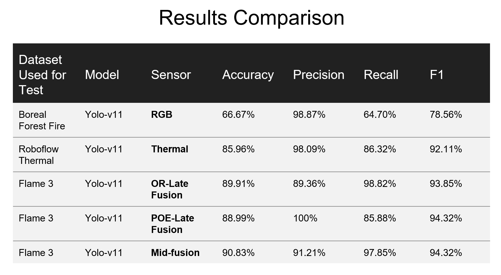
Fusion Methods
Three fusion strategies compared in the capstone
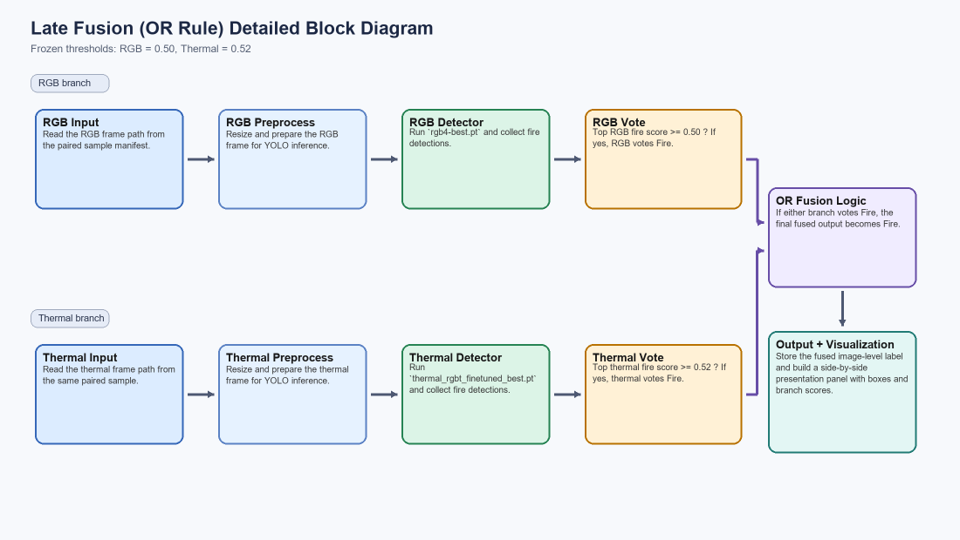
Baseline late fusion
OR Late Fusion
A decision is positive when either RGB or thermal evidence crosses its threshold. This tends to preserve recall, but it can inherit false positives from the stronger modality on a given scene.
fire if RGB ≥ trgb OR Thermal ≥ tth
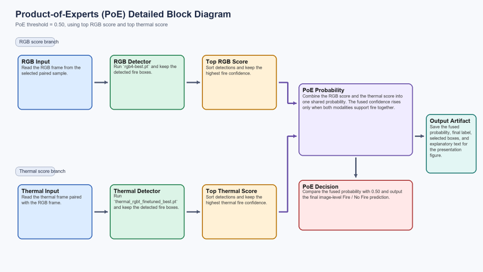
Agreement-based late fusion
Product-of-Experts
PoE rewards agreement between modalities. It improved precision to 100% on the FLAME3 eval-only bundle, but the stricter agreement rule reduced recall compared with OR late fusion and mid-fusion.
Pfused ∝ Prgb × Pthermal
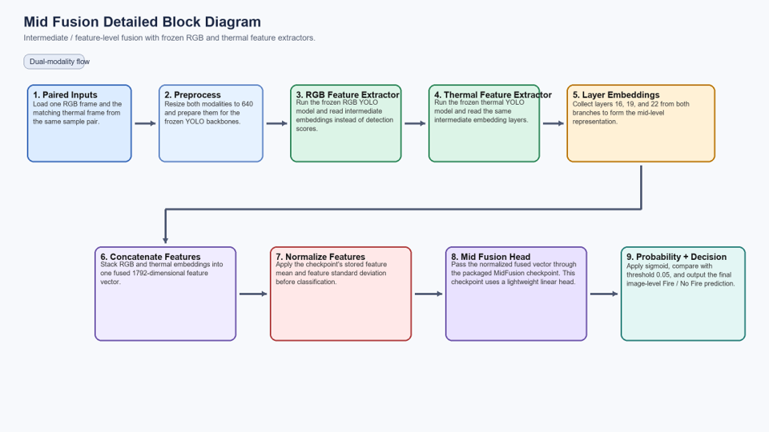
Learned feature fusion
Mid-Fusion
Mid-fusion combines internal feature embeddings from the RGB and thermal models, then learns a fused decision head. On the packaged FLAME3 evaluation, it delivered the best overall accuracy and F1 score of the fusion methods shown here.
concat(featuresrgb, featuresthermal) → fusion head
Results
FLAME3 eval-only comparison
These cards use the packaged evaluation summaries already stored in the project. The common comparison set contains 109 paired samples.
Key result
Mid-fusion produced the strongest overall score on this benchmark with 90.83% accuracy, 91.21% precision, 97.65% recall, and 94.32% F1.
Precision-recall tradeoff
PoE reached 100% precision and 100% specificity, but recall dropped to 85.88%. That makes it attractive when false alarms matter most, but not when missing fire is more costly.
Tuned holdout result
On a larger intermediate-fusion holdout split, threshold retuning improved holdout accuracy from 80.21% to 91.98% while keeping precision at 100%.
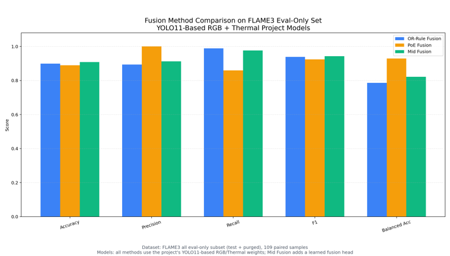
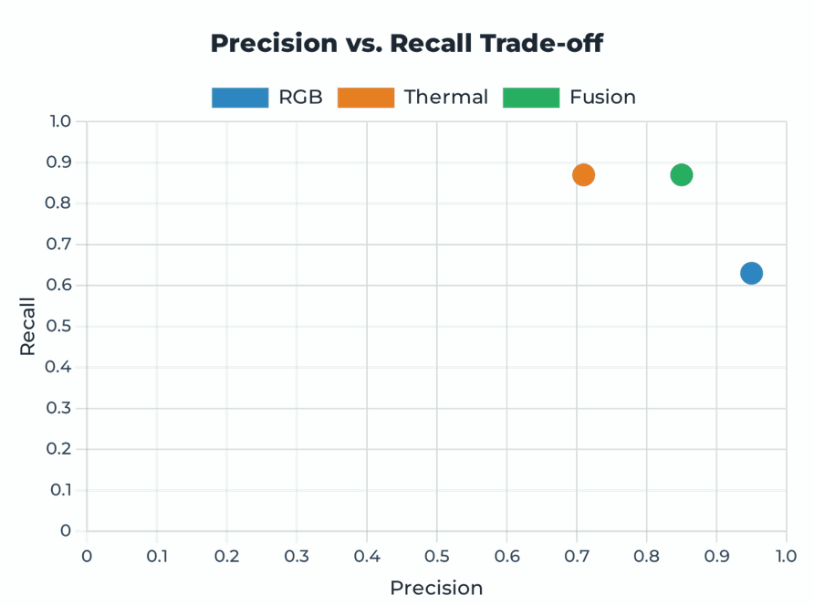
Examples
Sample inputs and fused outputs
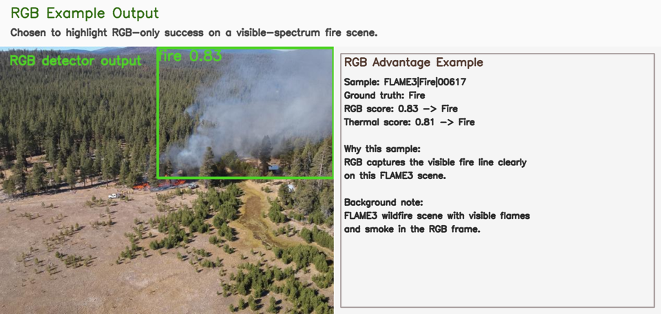
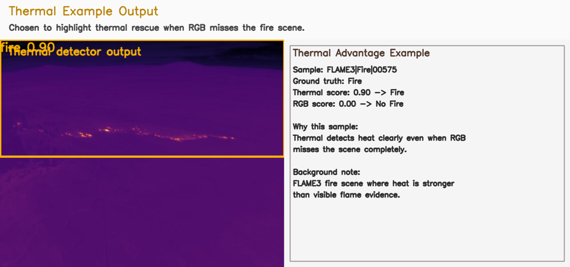
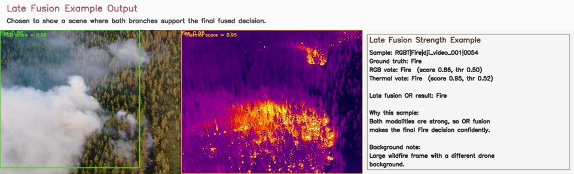
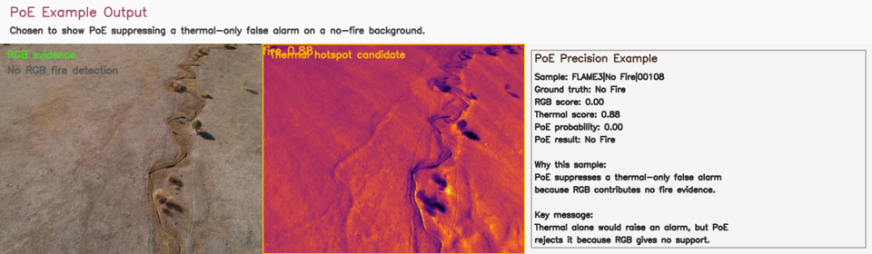
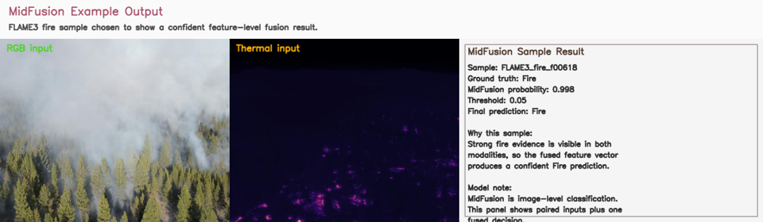
Artifacts
What is included in the capstone folder
Project Advisor
This capstone project was completed under the guidance of Marzieh Amini, the project advisor.
MidFusion_Package
Contains the learned feature-fusion checkpoint, ordered scripts, bundled test data, and evaluation outputs used for the best-performing fusion method on this website.
OR_Fusion_package
Contains the thresholded OR late-fusion baseline, frozen runtime configuration, and the packaged evaluation entry point for the portable smoke-test bundle.
POE_Fusion_Package
Contains the Product-of-Experts implementation, comparison reports against the late fusion baseline, and the packaged FLAME3 smoke-test evaluation results.
Good next additions for the final capstone version
- Add final poster PDF, abstract PDF, and a short demo video if you have them
- Replace or expand the team section with names, roles, and supervisor information
- Add a short methods timeline or workflow diagram for the full project process
- Publish the `website` folder to GitHub Pages once the final assets are ready